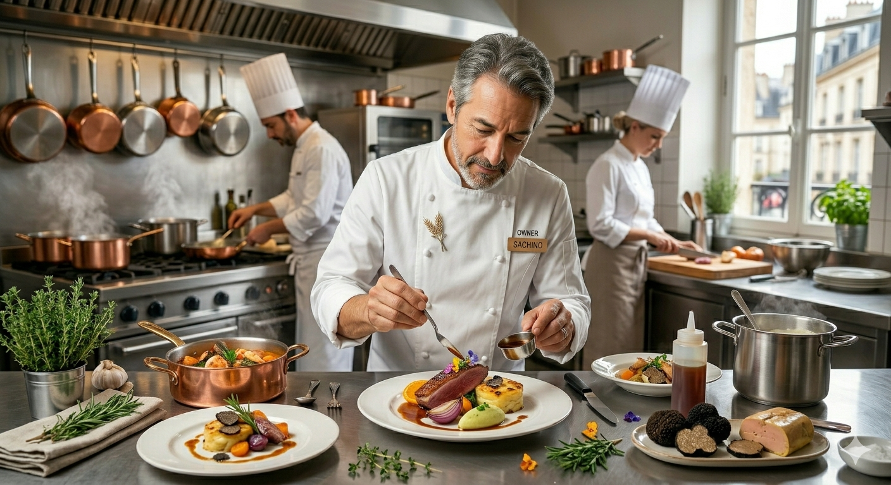

27年のキャリアを凝縮した、ひまわり卵の手打ちパスタ。
街路樹の緑を眺める静かな空間で、本格イタリアンを。
「名物ラザニアのチーズソースがけ」
をご注文の方に限り
※ご来店時に「WEBサイトを見た」とお伝えください。ランチ・ディナーどちらでも承ります。
022-398-4749
Owner Chef Profile
1980年山形県生まれ。27年のキャリアを持つソムリエシェフ。料理の力で人を幸せにすることを信条としています。
山形・鎌山温泉の旅館で育ち、幼い頃から「おもてなし」を肌で感じてきました。イタリア料理の修行を積み27年。辿り着いたのは、地元の恵みを最大限活かすシンプルで力強い一皿です。
山形の実家から届く新鮮な野菜、宮城の豊かな卵。それらを自慢の手打ちパスタと合わせ、ソムリエとしてワインとの調和も大切にしています。
美味しい料理と静かな時間で、明日への活力を蓄えていただければ幸いです。
お席に限りがございますので、
早めのご予約をお勧めいたします。